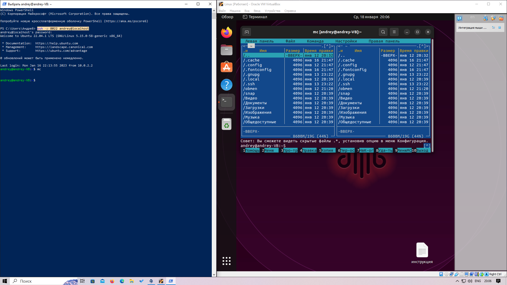

Linux - Операционная система, предназначенная как для серверов, так и для пользовательй настольных компьютеров.
Ubunta - Одна из веток ОС Linux, предназначенная для виртуальной машины на настольных компьютерах.
В отличии от других ОС, Linux основан на командоре, а не на графическом интерфейсе, например как Windows.
Для установки Linux-Ubunta в первую очередь необходимо скачать виртуальную машину (Oracle VM VirtualBox) и образ самой ОС.
Далее, на ПК устанавливается Oracle VM и в настройках устанавливается образ ОС Ubunta.
Важно, перед запуском необходимо проверить разрешение в BIOS на проверку разрешений для установки VM.
Перед запуском процесса инициализации, для ОС необходимо выделить ресурсы памяти и процессора с основной системы ПК.
Если выделить слишком мало - то Ubunta будет работать медленно, если выделить слишком много - то может
пострадать производительность основной ОС. После инициализации ОС Ubunta в VM, необходимо зарегистрироваться в Linux-Ubunta,
файл который находится на рабочем столе. Регистрация определяет найминг пользователя и пароль для получения доступа к ОС.
SSH соединение связывает ПК с VM и позволяет использовать командр VM в консоли командной строки ПК, например в PowerShel.
До начала установления SSH соединения, необходимо знать про виды соединений и базовые команды sudo.
Команды sudo - административные команды, позволяющие выполнить даже нежелаемые действия. Перед выполнением команды всегда
вводится пароль.
sudo apt update - проверка обновлений пакетов;
sudo apt update {перечесление} - установка пакетов например (mc, openssh);
sudo usermod - изменяет свойства группы пользователей
sudo reboot - перезагрузка ядра
Настроим SSH через мостовое соединение через IP (VM внутри локальной сети):
ip a - узнать IP (enp0s3);
systemctl status ssh - узнаем статус подключения, смотрим порт (22);
в PowerShell вводим ssh {имя пользователя}@{IP адрес}.
После установки SSH соединения мостовым способом, необходимо проверить его работоспособность, например открыв Миднайт Командер (mc).
Настроим SSH через соединение NAT пробросом портов (VM в своей изолированной среде):
в базовых настройках в пробросе портов добавляем новое правило (порт хоста 8022, порт гостя 22);
в PowerShell вводим ssh -p {порт хоста 8022} {имя пользователя}@localhost.
После установки SSH соединения пробросом портов, необходимо так же его проверить.

На изображение выше представленно настроенное SSH соединение пробросом портов.
Теперь ОС готова к работе. Давайте установим гостевой пакет для удобства настройки расширения экрана VM:
в командоре вводим sudo apt update;
устанавливаем необходимые пакеты через sudo apt install gcc make perl;
через устройства подключаем образ гостевых дополнений;
в менеджере документов открываем образ и запускаем run-файл от админа.
Теперь давайте создадим общую папку, позволяющей обмениваться файлами между Основной ОС ПК и ОС Ubunta:
Структура файловой системы Linux построена набазе стандарта. В нем описаны функции всех основных каталогов.
Всё начинается с корня (/), это верхний уровень иерархии каталогов в Linux. Попасть в него можно с
помощью команды cd (change directory): cd /.
Домашний каталог находится по адресу /home/db, где db – это логин нашего пользователя.
Именно этот каталог отображается как тильда в приглашении bash.
В домашнем каталоге находятся файлы пользователя: документы, рабочие файлы, настройки программ.
В домашнем каталоге пользователь имеет полные права на управления файлами и не будет иметь проблем с доступом.
Важно понимать, что в домашнем каталоге хранятся настройки только для пользователя, системные настройки приложений находятся в каталоге /etc.
Домашний каталог содержит обычные файлы и директории, но существуют специальные файловые системы, в которых всё по-другому.
ДЗ 2.
создал директорию через "mkdir homework2" и переместился в нее командой "cd homework2";
через команду "pwd" проверил текущую директорию;
при помощи команды "cat > file1" создал файл, нажал enter, ввел текст и нажал ctrl+d для записи данных в файл;
повторил операцию для записи данных в file2;
затем через команду "cat file1 file2 > file12" произвел склейку file1 и file2 в file12;
при этом file1 и file2 остались в директории и в ней же появился file12 со строками из склееваемых
файлов, размещенными на разных строках в последовательности указания файлов;
создал директорию через "mkdir other" в текущей директории /home/andrey/homework2/other;
командами "sudo mv file1 /other", "sudo mv file2 /other" и "sudo mv file12 /other" перенес файлы в директорию /other;
Важно, сначала прописываем файл, который хотим переместить, затем прописывает путь в директорию, в которую хотим перенести файл.
Команда "mv" выполняется через sudo.
вернулся в домашнию директорию /home/andrey командой "cd ~";
командой "rm -r homework2" удалил рекурсивно папку homework2 со всем ее содержимым;
создал директорию через "mkdir hw2" и переместился в нее командой "cd hw2";
через команду "pwd" проверил текущую директорию;
командой "cat > file1" создал файл, нажал enter, ввел текст и нажал ctrl+d для записи данных в файл;
затем через команду "cp file1 file2" произвел копирование file1 на file2 в текущей деректории;
через команду "vim file2" открыл file2, через "insert" активировал режим записи и изменил содержимое файла;
Затем скинул режим записи через "insert->Escape" и вышел из VIM командой ":wd" с записию изменений.
через команду "cp file1 file2" произвел копирование file1 на file2 в текущей деректории;
через команду "ln file1 file3" создал жесткую ссылку file3 на file1;
через команду "ln -s file1 file4" создал символическую ссылку file4 на file1;
командой "ls -al -i" посмотрел файлы в текущей деректории и их айноды;
298651 - file1
298655 - file2
298651 - file3
286991 - file4
у жесткой ссылки file3 на file1 айноды совпадают, а у символической ссылки свой айнод.
через команду "sudo rm file1" удалил file1; file3 и file4 остались, при этом при выводе содержимого
директории, сиволическая ссылка выделилась краснным цветом, а жеская ссылка стала меньше занимать памяти.
Файл с символической ссылкой пуст, в отличии от файла с жесткой ссылкой.
затем через команду "mv file2 file11", "mv file3 file22" и "mv file4 file33" переименовал файлы;
Теперь file33 испорчен
через команду "ln -s file11(22,33) file1(2,3)" создал символические ссылки в текущей деректории;
командой "mkdir new" создал новую директорию /home/andrey/hw2/new;
затем через команду "sudo mv file2(2,3) /new" переместил символические ссылки в директорию /new; Символический ссылок
в директории /new не обнаружил.
затем через команду "sudo mv file11(22,33) /new" переместил символические ссылки в директорию /new;
В директории /new новых файлов так и не обнаружил. Обьем памяти директории не изменился.
вернулся в домашнюю жиректорию "cd ~" и удалил ненужную директорию "sudo -r hw2 ~";